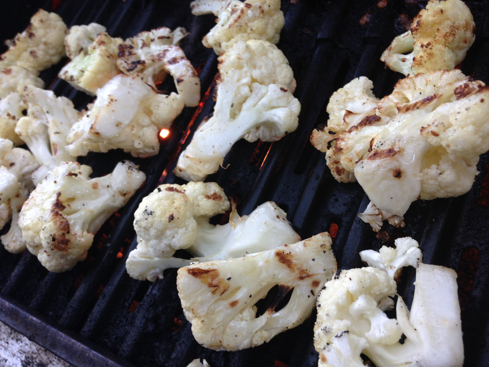

Lasagna

Description
This is a perfect side dish to any meal coming off the bbq. Simple, quick, and tasty!
Ingredients
- 1 head cauliflower, cut into large florets
- 3 tablespoons olive oil
- 1 teaspoon coarse sea salt
- 1 teaspoon cracked black pepper
Steps
- Preheat grill for medium heat and lightly oil the grate.
- Place cauliflower in a bowl. Drizzle olive oil over cauliflower and season with salt and pepper; toss to evenly coat.
- Cook on the preheated grill, turning every 2 minutes, until cauliflower is golden brown, 10 to 15 minutes.
Main menu